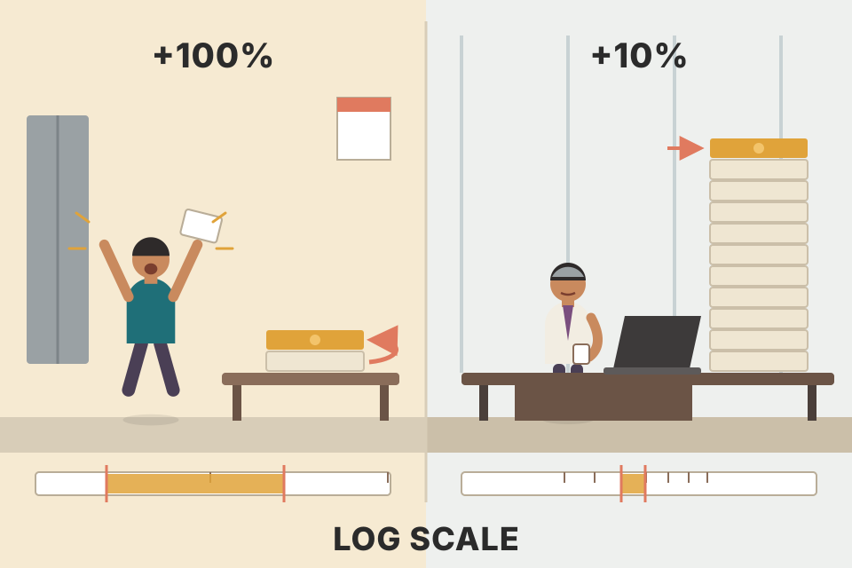
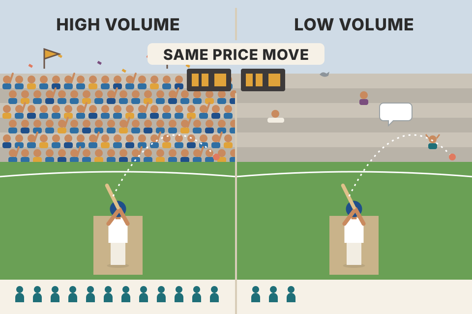
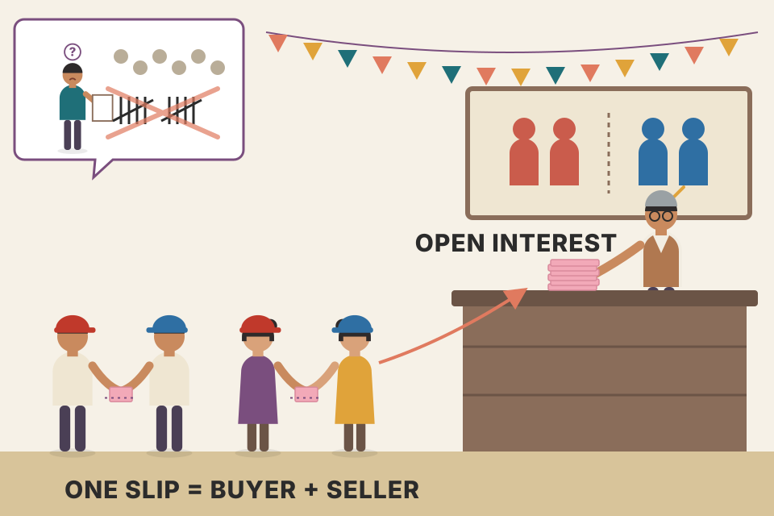
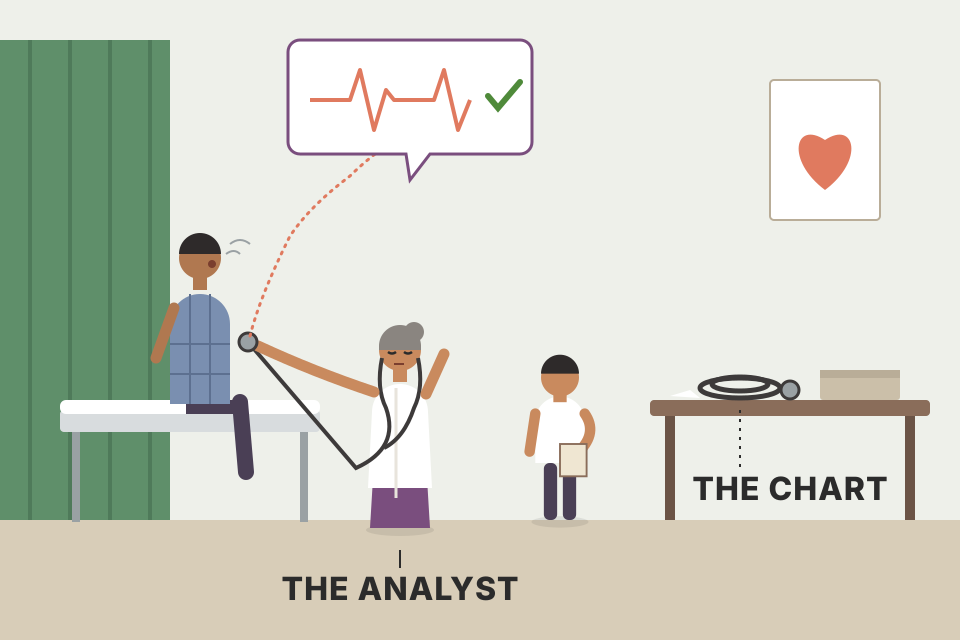

Before you can read a chart you need to know how it's made: which four prices go into each bar, why the close tick sits on the right, why a log scale can change what a trendline says, and what volume and open interest are. Every chart on this page is drawn from the same kind of simulated market, so you can flip between views and see that only the picture changes, not the data. Charts use simulated prices, not real market data.
A chart is three choices stacked on top of the raw numbers: what kind of picture, what kind of price scale, and how much time each bar covers. Murphy also adds the two extra data series that sit under the price.
Murphy wrote this chapter for readers who have never built a bar chart. It covers, in order: the different types of chart, then the most common one, the daily bar chart; how price data is read and plotted; volume and open interest; and longer-range weekly and monthly charts. With that done, the next chapter starts on the analysis tools. He says readers who already know charts may find this too basic and can skip ahead.
Learning to read a map starts with the legend: what a blue line means, what one centimetre stands for. This chapter is the chart's legend.
The daily bar chart is the most widely used chart in technical analysis. Technicians also use line charts, point and figure charts and, more recently, candlesticks.
Murphy makes the point by drawing one market four ways: Figures 3.1 to 3.4 are all Intel (INTC), roughly July 1997 to February 1998, as a daily bar chart, a line chart, a point and figure chart and a candlestick chart. The interactive chart below does the same with one simulated market.
| Chart | Prices it keeps | Time axis | What Murphy says it's good for |
|---|---|---|---|
| Bar | open, high, low, close | one bar per day, evenly spaced | the standard: the most widely used chart |
| Line | close only | one point per day | many chartists see it as a more valid measure of price activity, because the close is the most important price of the day |
| Candlestick | open, high, low, close | one candle per day | everything a bar chart can do; the key is the relation between open and close |
| Point & figure | only moves of at least one box (on this page: closes only) | none regular: a new column starts only when price reverses | a compressed picture; buy and sell signals more precise and easier to spot |
Seventeen closes, box size 1, 3-box reversal, using this page's simplified closes-only method (Chapter 11 gives the full rules). Two rounding rules do all the work: a rising close counts only the boxes it fully reached (103.6 reaches box 103, not 104), and a falling close likewise (101.7 reaches box 102, not 101). Step through and notice how many closes change nothing at all.
| # | Close | What happens |
|---|
Result: 17 days become 3 columns (x's 100–105, o's 104–102, x's 103–107). Eight of the sixteen moves after the start drew nothing: the 3-box reversal rule is a noise filter. That's the "compressed format" in action.
Three ways to describe the same journey. The bar chart is a full diary (where you started each day, the furthest you went each way, where you stopped). The line chart is just the list of hotels you slept in. Point & figure is a list of the turns you made, ignoring the days you went nowhere.
The bar, line and candle views draw exactly the same days, so their shapes match. P&F is built only from closes here: a new x is added each time price rises a full box above the top of the current column, a new o each time it falls a full box, and the column switches only after a 3-box move the other way (the "3-box reversal" that Chapter 11 explains). Small moves add nothing, so many days collapse into a few columns. That's the compressed format Murphy mentions. A bigger box means fewer, cleaner columns.
Failure modes (my note, not in this chapter): set the box too small (0.5 above) and almost every wiggle becomes a 3-box reversal, so the chart is as noisy as the daily bars and its "signals" fire constantly. Set it too big (4) and months of action fold into one or two columns, so a turn shows up only after a large move has already happened. Watch the column count in the readout as you drag the box size: that count is the compression ratio.
Candlesticks are the Japanese version of bar charting and had become very popular with Western chartists. A candle records the same four prices as a bar (open, high, low, close), but draws them differently:
The key to candlesticks is the relationship between the open and the close. Murphy notes that, possibly because candles became popular, Western chartists started paying much more attention to the opening tick on their bar charts. Anything you can do with a bar chart you can do with candles: all the tools and indicators in the book work on them, and you can build weekly and monthly candles the same way as weekly and monthly bars. Chapter 12 explains candlestick charting in depth.
Say a stock opens at 101.20, trades up to 103.80 and down to 100.40, and closes at 103.10. The range is 103.80 − 100.40 = 3.40. The real body runs from the open to the close: 103.10 − 101.20 = 1.90, and it is white because the close is above the open. The upper shadow is 103.80 − 103.10 = 0.70 and the lower shadow is 101.20 − 100.40 = 0.80. The bar chart draws the same four numbers as a line from 100.40 to 103.80 with a left tick at 101.20 and a right tick at 103.10. Type your own prices below; a set of prices that can't happen (a high below the close, say) is refused, just as no real day could produce it.
Chapter 12 gives these shapes names and meanings. Here the point is only mechanical: a candle and a bar are two encodings of one 4-number record.
The body is the day's result (did buyers or sellers win between the opening bell and the closing bell?), and the shadows are the arguments along the way. You see who won before you see how far they wandered.
Tick the overlay: every candle sits exactly on top of its bar. The left tick lines up with one end of the body (the open), the right tick with the other end (the close), and the shadow is the bar's high–low line. Same data; the candle just paints the open–close part so you can't miss it.
Why a rising market can still print so many black candles (beyond the book): in the drift-plus-noise model of your price_physics_basics.md, one day's drift is tiny next to one day's noise. If each candle opens at the previous close, the share of white candles is about Φ(drift ÷ noise) for that bar length: roughly 52% white for daily candles of a market rising 12% a year with 15% volatility, about 58% for monthly candles. So a chart that is mostly black-and-white noise day to day can still be a clear uptrend. Section 11 has a calculator for this. (The simulated candles here also open with a random gap from the previous close, so their split is noisier still.)
Charts can use an arithmetic or a logarithmic price scale. For some kinds of analysis, especially very long-range trend analysis, a log scale may have an advantage.
A chart maps a price to a height. With the bottom of the axis at price lo and the top at hi, the height as a fraction of the axis is:
Use the 1-to-10 axis from Figure 3.5. Arithmetic (0 to 10): every 1-point step takes 10% of the height, so 1→2 and 9→10 look the same. Log (1 to 10): 1→2 takes ln 2 / ln 10 = 30.1% of the height, 5→10 also takes ln 2 / ln 10 = 30.1%, but 9→10 takes only ln(10/9) / ln 10 = 4.6%. That's Murphy's point that each one-point step is a smaller percentage as price rises, put in numbers: 9→10 is +11%, 1→2 is +100%.
Your turn: compare any two moves.
Take a chart whose top price is R times its bottom price. For every price in between, compare its height on the arithmetic scale with its height on the log scale. The largest difference, as a share of the chart's height, says how different the two pictures can look. Drag R.
Results: a chart spanning ×1.1 (a 10% range) differs by at most 1.2% of its height between the scales: invisible. ×1.5: 5.1%. ×2: 8.6%. ×5: 19%. ×10: 27%. ×20: 34%. So on a daily chart covering a few months, the scale barely matters; on a five- or twenty-year chart of a stock that multiplied, it changes the picture a lot. That is why Murphy ties the log scale to very long-range trend analysis.

Your salary going from ₹10,000 to ₹20,000 changes your life far more than going from ₹1,00,000 to ₹1,10,000, even though the second jump is the same ₹10,000. The log scale draws money the way it feels: by how much it multiplied.
This simulated stock grows by a steady percentage each year with random noise. On the arithmetic scale the curve bends upward, because the same percentage gain adds more rupees each year, and the early years squash into a flat strip at the bottom. On the log scale a steady percentage climb is a straight line. The orange line is drawn straight in whichever scale you're viewing, through the lowest weekly close of year 1 and of year 3 (a three-year line, like Murphy's Intel example). The readout measures, for both scales, how far the lows of years 4 and 5 sit above that line. A straight line on the log chart rises at a steady percentage, like the simulated growth, so later lows usually stay near it and it keeps acting as support. A straight line on the arithmetic chart rises by the same rupee amount each week, so a percentage-growing price usually pulls far away from it, and the line stops saying anything useful. Slide the growth rate down to 10–20% and the two lines almost agree; push it up and the arithmetic line falls far behind. That's why the log scale matters most for long, large moves. Roll a few markets too: noise sometimes breaks the pattern, which is why Murphy says "may be some advantage", not "always".
Pooled check (my simulation, not Murphy's evidence): I ran this exact setup on 300 simulated markets per growth rate and counted how often the log line was the one closer to the year 4–5 lows. At 10% a year: about 48% of markets (a coin flip). At 20%: about 54%. At 40%: about 67%. At 60%: about 84%. At 80%: about 95%. So the log scale's advantage for trendlines grows with the size of the move; on small moves the choice of scale barely matters.
Where the log scale breaks (beyond the book): ln(P) needs P > 0. A series that can touch zero or go negative can't be drawn on a log axis at all: spread charts (one contract minus another), P&L curves, and in April 2020 the expiring WTI crude oil futures contract, which settled at about −$37 a barrel. For those, arithmetic is the only choice. Near zero the log scale also blows small moves up: 0.10 → 0.20 takes as much height as 100 → 200.
price_physics_basics.md writes returns as r = ΔP / P and models price as P(t + Δt) = P·(1 + μ·Δt + σ·√Δt·Z): moves come in percentages. A log chart is the picture that matches that model.Murphy calls it extremely simple. A bar chart is both a price chart and a time chart: the vertical (y) axis is price, the horizontal (x) axis is time, with dates along the bottom.
A school attendance register: one column per school day, weekends simply aren't in the book, and a holiday column is left empty rather than removed, so the dates stay lined up.
The dates are simulated weekdays starting on Monday 5 January. Monday 26 January is shown as an exchange holiday (Republic Day, when NSE is closed; that example is mine, not Murphy's), so its slot stays empty while Saturdays and Sundays don't get a slot at all. The readout gives the four prices of the latest bar. Step through and check that the right tick always matches the close.
Under the hood the x-axis is not a calendar, it's a list of slots. The 30 weekdays from Mon 5 Jan to Fri 13 Feb become 30 slots in Murphy's convention (29 bars plus one blank), while the 10 weekend days in between get no slot at all. Switch the Holiday option to "skip" and the axis becomes 29 slots: every bar after 26 January shifts one slot left and the blank disappears.
Beyond the book: most modern charting platforms (TradingView, for example) skip holidays the same way they skip weekends, so you won't see blank slots. Either way, indicators count bars, not calendar days: a "20-day" average is 20 trading sessions, which is about four calendar weeks, and longer when there are holidays.
The core of it in code (mine, not in the book): a chart's x-axis is an index into a list of slots, not a date. Murphy's convention keeps a blank slot for an exchange holiday; most software drops it.
Volume is the total trading activity in a market for the day: the total number of futures contracts traded, or the number of shares that change hands in the stock market. It's drawn as a vertical bar at the bottom of the chart, under that day's price bar. A taller bar means heavier volume; a shorter bar, lighter volume. A vertical scale along the bottom helps you read the numbers (Fig 3.7).

Price tells you the score; volume tells you how many people were in the stadium. The same goal in a packed stadium and in an empty one doesn't carry the same weight.
In this simulation volume is random but grows on days with big price moves (a common pattern in real markets too; not in the book). The highlighted days are mostly the large-range bars. This chapter only shows how volume is drawn; Murphy explains how to interpret it in Chapter 7.
How the highlight rule is computed (my note): for day t, average the volume of the 20 days before it, then flag day t if its volume beats 1.5 × that average. Using the days before matters: if today were inside its own average, a spike would lift the bar it's compared against. With 19 days of 1.0M and a 2.0M day, the average of the 20 days before is 1.0M (ratio 2.0×), but an average that includes today is 1.05M (ratio 1.9×). The readout shows the numbers for the latest flagged day.
intraday_swing_playbook.md setup S-1 uses exactly this highlight rule: a daily close above the 50-day high on volume above 1.5× the 20-day average.Open interest is the total number of futures contracts still outstanding (held by market participants) at the end of the day. It counts the contracts held by the longs or by the shorts, not both added together: in futures every long has a matching short, so you only need one side's total. It's drawn as a solid line near the bottom of the chart, usually just above the volume bars and below the price (Fig 3.8, a Treasury Bond futures line chart).

Count the bets still open at a betting counter. Each bet has two people on it, one on each side. If you counted every person you'd double the number; count the betting slips instead.
A newly listed contract, six traders (A to F), one contract per trade. Whether a trade adds to open interest depends on whether each side is opening a position or closing one. Murphy lays out the four combinations in Chapter 7 (pdf p196–197); this replay uses all four. Volume adds one for every trade. Open interest is the number of contracts still held at the end: count the longs (which always equals the shorts).
| # | Buyer | Seller | Effect on OI | Volume so far | Open interest |
|---|
End of the day: volume 5, open interest 1 (E is long one contract, F is short it). Ten "sides" traded, five trades printed, one contract left open. Volume measures how busy the day was; open interest measures how much is still committed overnight. They can move in opposite directions.
The layout copies Figure 3.8: price on top (as a line here), the open interest line in the middle, volume bars at the bottom. Murphy's figure shows the total volume and open interest for the whole Treasury Bond futures market, which is the subject of the next section. The flow/stock framing that follows is mine (not in the book): volume is a flow (contracts traded during the day, starting from zero again each day). Open interest is a stock (how many contracts are still open at the close, carried over from day to day). That's why OI is a smooth line and volume is a row of separate bars. In the chart above, the simulated OI line drifts up slowly and moves partly with price; that is my modelling choice so the line looks alive, not a rule from the book. What rising or falling OI means for the trend is covered in Chapter 7.
The bookkeeping rule in code (mine): each trade adds 1 to volume. It changes open interest by +1 if both sides open, −1 if both sides close, and 0 if one side opens while the other closes (a position just changes hands).
order_flow.md already has the modern NSE version: price ↑ + OI ↑ = long build-up, price ↓ + OI ↑ = short build-up, price ↑ + OI ↓ = short covering, price ↓ + OI ↓ = long unwinding.Futures chart services and most futures technicians use only the total volume and open interest figures for a market. Figures exist for each delivery month, but the totals are the ones used for forecasting, for a good reason:
So the rise in a single contract's numbers in its first months, and the fall near the end, have nothing to do with market direction; they come from the contract's limited life. Totals give the continuity needed for forecasting. (Stock charts plot total volume but have no open interest.)
A hotel where every guest stays exactly one year. Any one guest's luggage pile grows as they settle in and shrinks as they pack to leave, whatever the economy is doing. The hotel's total occupancy, summed over all guests, is the number that tells you whether business is good.
Each simulated delivery month lives about 250 trading days: its open interest grows slowly, peaks, then falls to zero over the last ~2 months before expiry. A new month is listed every quarter, so the humps overlap. In this simulation total demand is held constant (each month gets its life-cycle share of a fixed total, plus a little noise), so the bottom panel stays nearly flat: the big swings in each single month were caused only by the calendar. A trader reading one contract alone would see "rising OI" and "falling OI" that mean nothing.
Worked example (simulated numbers): the second line of the readout compares the last 20 trading days for the front month (the one expiring next) and for the total. At day 260 the front month (Mar 28) has lost roughly a fifth of its open interest in 20 days (15–22% across the markets I rolled) while the total has moved under 4%. At day 100, three trading days before the June contract expires, the front month is down about 85% in 20 days while the total has moved no more than about 6% either way. Read alone, the front month screams "money leaving"; the total says nothing much happened.
Now tick new money: total demand rises steadily by 40% over the 500 days (real buying and selling interest coming in). The single-month lines still rise and fall to zero on the calendar, so they hide the inflow, while the total panel climbs from about 145–150k to about 210–215k. The signal lives only in the sum. This is the same idea as summing a metric across all the shards of a database instead of watching one shard that is being drained for migration.
Futures volume and open interest are reported a day late, so the futures chartist has to accept a one-day lag. The official numbers usually come out during the next day's trading hours, too late for that day's newspapers. Estimated volume is available after the close and goes into the next morning's paper; it at least tells you whether trading was heavier or lighter. So the morning paper gives the last day's futures prices with an estimated volume, while the official volume and open interest are for the day before that. Stock chartists don't have this problem: stock volume totals are available immediately.
The table is my illustration of Murphy's timing rule, using example weekdays.
| What you read in the paper on the morning of… | Prices for | Volume | Open interest |
|---|---|---|---|
| Wednesday | Tuesday | Tuesday (estimated) · Monday (official) | Monday (official) |
| Thursday | Wednesday | Wednesday (estimated) · Tuesday (official) | Tuesday (official) |
Follow one trading day, Tuesday, from its close to the moment its official open interest finally reaches you. The timing follows Murphy's description; the five moments are my illustration.
| # | Moment | Tuesday prices | Tuesday volume | Tuesday open interest | Latest official OI you hold |
|---|
Prices are printed as trades happen, so they are known at the close. Volume and open interest have to be counted and reconciled across every trade and every account after the session ends, so the official count comes later (my explanation of the cause; Murphy only states the lag). A number has two dates: the day it describes and the day it becomes available. Charts are stamped with the first date; your decisions can only use the second.
The rule in code (mine, not in the book): when you join futures OI to prices for a test, shift it by the reporting lag.
A toy model, built by me to show the mechanism, not a claim about real markets. Each day some informed traders open new positions. That shows up in that day's change in open interest (with noise), and it pushes price the next day by an amount set by the slider. The rule: be long for one day whenever open interest rose. Version A (wrong) uses day t's official OI at day t's close, before it was published. Version B (honest) uses the newest figure actually available, day t−1's. Both are pooled over 200 simulated markets of 250 days each.
| Version | Days in the market | Average return per day held | Up days | ≈ per year (125 days held) |
|---|
In the model the honest version earns nothing at any setting, because by the time the OI figure is published the move it predicted has already happened. Set the slider to 0 and both versions earn nothing: then OI simply has no information. The lesson for any backtest: a result that only exists when you ignore the reporting lag is not an edge you can trade.
Exam results: the teacher tells you that evening roughly how you did (the estimate), but the official marksheet arrives the day after.
order_flow.md lists NSE "Futures OI + price" under its "slower order flow" data, useful for swing and delivery trades rather than intraday ones. The habit to keep is Murphy's: know when each number you use was actually available, or a backtest can peek at data you wouldn't have had.Single-month open interest still has a use: it shows which contracts are the most liquid. Murphy's general rule: limit trading to the delivery months with the highest open interest, and avoid months with low open interest. Higher open interest means more interest in that month.
Apply Murphy's rule mechanically: on each day, trade the month with the largest open interest. The table finds, for every expiry in the simulation, the first day the next month's open interest overtakes the expiring one, and how many trading days before expiry that happens.
| Expiring month | Expiry day | Next month takes the lead on day | Trading days before expiry |
|---|
In these simulated markets the lead changes roughly 22–25 trading days (about a month) before each expiry, inside the "last couple of months" when Murphy says open interest drains away. Near the crossover the two months are almost equal, so day-to-day noise can flip the label back and forth for a day or two. In practice traders pick one switch date and stick to it rather than flipping daily (my note, not in the book).
These are the same simulated contracts as section 08. Slide through the days and watch the "most open interest" label jump to the next month as the front month nears expiry: that's when traders close out the expiring month (Murphy's point) and, today, typically reopen in the next one ("rolling", not in the book). A month with little open interest has few traders on the other side, so getting in and out costs more (my explanation of why liquidity matters).
A bar chart can be built for any time period. Intraday bar charts show the high, low and last prices for periods as short as five minutes. An average daily bar chart covers six to nine months. For longer-range trend analysis you must use weekly and monthly charts; they're built and updated the same way. On a weekly chart one bar is a whole week; on a monthly chart one bar is a whole month. By compressing the price action this way, they make much longer-range trend analysis possible: weekly charts can go back about five years and monthly charts up to 20 years (Figures 3.9 and 3.10 show the U.S. Dollar Index). Murphy calls this a simple technique that gives a valuable long-range view, one that's often lost by relying only on daily charts. Chapter 8 covers why these charts matter.
One week of made-up prices. The weekly bar keeps only four numbers: the first open (Monday's), the highest high of any day, the lowest low of any day, and the last close (Friday's). Volume is the sum of the five days. Step through the days and watch the weekly bar on the right grow.
| Day | Open | High | Low | Close | Volume |
|---|
Result: open 100.0 (Monday), high 102.5 (Tuesday), low 99.2 (Thursday), close 101.3 (Friday), volume 5.6M. Wednesday's drop from 102.0 to 100.5 and Thursday's dip are inside the weekly bar but no longer visible as separate moves: that is Murphy's "compressing" in numbers. A monthly bar does the same over about 21 trading days.
The chart above this box takes a shortcut (mine): it groups every 5 simulated days into a week and every 21 into a month. Real software groups by calendar, so a holiday week makes a weekly bar from 4 days.
Murphy says weekly and monthly charts give the long-range view that daily charts lose. Here is the arithmetic behind that (mine, not in the book). Model price as a steady drift plus random noise, as in your price_physics_basics.md. Over a bar of length Δt (in years), the drift adds about μ·Δt while the noise is about σ·√Δt. Drift grows with time; noise grows only with the square root of time. So the longer the bar, the more the trend outweighs the noise, and the more bars close up. For prices that compound, the share of up bars is about Φ((μ − σ²/2)·√Δt / σ), where Φ is the normal distribution's cumulative probability.
| Bar length | Drift per bar | Noise per bar | z = (μ − σ²/2)·√Δt ÷ σ | Up bars (formula) | Up bars (simulated) |
|---|
With the defaults (12% drift, 15% volatility): 5-minute bars close up about 50.2% of the time, daily bars about 52%, weekly about 54%, monthly about 58%, yearly about 77%. The 5-minute row assumes the NSE cash session of 9:15 to 15:30, which is 75 five-minute bars a day. At that bar length the trend is invisible: each bar is a near coin flip. Your backtest_results_summary.md verdict is that no intraday strategy passed, with charges and slippage eating the small edges that did appear. Tiny drift per bar is one reason those edges are small, though this calculator doesn't prove it. The simulation compounds daily steps, so it can only check the daily, weekly, monthly and yearly rows.
Google Maps. Street view (daily) shows every pothole but not where the road goes. Zoom out to the city (weekly) and then the country (monthly) and you see the highway, even though no single pothole is visible any more.
All three views come from one 20-year simulated daily series. A weekly bar takes the first open, the highest high, the lowest low and the last close of 5 trading days; a monthly bar does the same for about 21 days. The daily view's swings, which look huge, become a few small bars on the monthly view, and the long trend that was invisible becomes obvious.
backtest_results_summary.md verdict: "Delivery on weekly/monthly signals is where the edge is"; no intraday strategy passed. Your price_physics_basics.md explains why: over weeks and months the drift starts to show through the noise.tori_trendlines_explained.md: Tori's process starts top-down, monthly → weekly → daily.You now know how to plot a bar chart and have met the three basic sources of information: price, volume and open interest. Murphy stresses that the chart only records the data; by itself it has little value. He compares it to a paint brush and canvas, which are worthless until a talented artist uses them. An even better comparison is a scalpel: in a skilled surgeon's hands it saves lives, but in most people's hands it's useless and might even be dangerous. A chart becomes an extremely useful forecasting tool once you understand the rules. The next chapter starts with the basic concepts of trend, which Murphy calls the building blocks of chart analysis.

A stethoscope records a heartbeat. It doesn't diagnose anything; the doctor who knows what a healthy beat sounds like does. Chapter 3 built the stethoscope; Chapters 4 onward teach what to listen for.
Each choice in this chapter changes the picture without changing the data. Before you trust a pattern, check how the picture was made.
| Ask | From section | What goes wrong if you don't |
|---|---|---|
| Bars, candles, line or P&F? If P&F, what box size? | 02, 03 | A line chart hides the day's range; a P&F box that is too small or too big turns noise into signals, or hides turns until late. |
| Arithmetic or log scale? | 04 | On a chart spanning ×5 or more, a trendline drawn on one scale lands in a different place on the other, so "the break" happens on a different day. |
| How are holidays and missing days handled? | 05 | Two platforms can show different bars at the same position, and an "n-day" count can cover different calendar spans. |
| Futures: total or single-month volume and open interest? | 08, 10 | Reading one contract's life cycle as money flowing in or out. |
| When was each number actually available? | 09 | Backtests that use figures published after the decision they drive. |
| Daily, weekly or monthly bars? | 11 | Calling a trend from bars too short for the drift to show through the noise, or missing the long-range trend entirely. |
The right. It's put on the right so it can't be confused with the open, which is marked on the left (sections 02 and 05).
It plots only closes, and many chartists see the close as the most important price of the day, so a close-only chart is seen as a more valid measure of price activity (section 02).
x columns show rising prices, o columns falling prices. It's the same price action in a compressed format (section 02).
The close was below the open, a negative day. The shadow still shows the full high–low range (section 03).
Arithmetic: 50→55 (same five points). Log: 10→20, 20→40, 40→80, or any other doubling (section 04).
Wednesday's slot is left blank. Weekends aren't shown at all on a five-day-week chart (section 05).
500. Count the contracts held by one side, not the total of both (section 07).
Not by itself. Open interest always drops near expiry as traders close positions; that's why chartists use total figures for forecasting (section 08).
One with the highest open interest; avoid months with low open interest (section 10).
Daily: about six to nine months. Weekly: as much as five years. Monthly: up to 20 years (section 11).
Arithmetic: the same length (20 points each). Log: the first leg is longer, because it is +100% while the second is only +50%. This is why a straight trendline on one scale is a curve on the other, and why Murphy found the long Intel trendline worked better on the log chart (section 04).
Because each contract's open interest rises after it is listed and falls before it expires whatever the market does. Those changes come from the contract's limited life, not from traders' views. Only the total across all months gives the continuity needed for forecasting (section 08).
No. The official volume and open interest came out a day late (during the next day's trading hours), so on the evening of day T you only had an estimated volume and the official figures for day T−1 (section 09). A backtest that trades on day T's official open interest at day T's close is using data nobody had yet (look-ahead bias). The backtest point is mine, not Murphy's.
Open 50 (Monday's open), high 54 (Tuesday), low 47.5 (Thursday), close 50.5 (Friday's close). The weekly bar keeps the first open, the highest high, the lowest low and the last close; everything in between is compressed away (section 11).
Over a bar of length Δt the drift adds about μ·Δt, while the noise is about σ·√Δt. Drift grows in proportion to time and noise only with its square root, so the ratio drift ÷ noise grows with √Δt. With 12% drift and 15% volatility a year, about 50.2% of 5-minute bars close up, but about 58% of monthly bars do (section 11's calculator). The calculation is mine; Murphy's point is that longer bars give the long-range view.